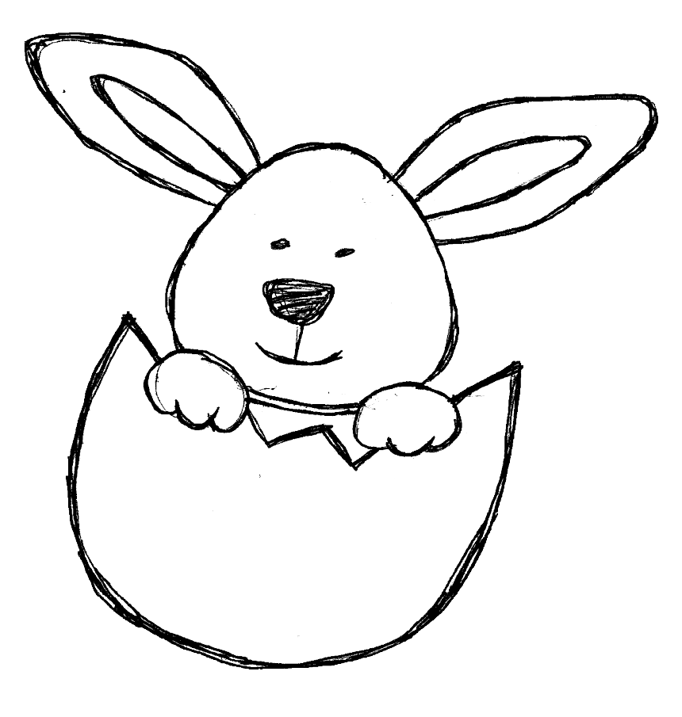
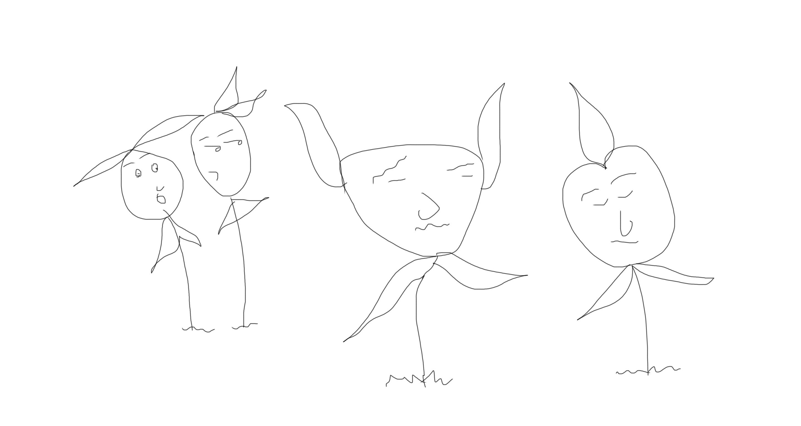
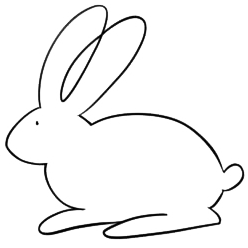

Most of the animations I've been using in my site were just things I copied and pasted from codepen and other places and fiddled with.
But I've become so interested that I just had to learn how to do these things on my own, so I started a CSS animations course on Lynda.com. I want to learn really advanced stuff.
CSS animations is my latest effort at finding an artistic way of expression. I've tried about a million things by now, a million artistic outlets to tell stories or express things, and none of them worked I didn't stick around long enough to get good at any of them. Here are a few things I've tried:
1. Drawing: My drawings never turn out the way I intend them to. I'll set out to draw something beautiful and it always turns out looking unintentionally weird. Here is a picture I drew once. I was trying to get fairies.
Like seriously lmao wtf is that.
2. Painting: Painting is just not my thing. I mean its super fun and I love to do it, but I dont paint any thing real. If I marketed myself well though I could become the leading abstract artist of our age LMAO.
3. Animation: I cannot bring myslef to put in the energy and effort to learn actual animation. I watched a youtube tutorial once called "Animation for Beginners!"... I got tired just thinking about all that work.
Other things I've dabbled in include photo manipulation (which I havent given up on yet), writing and storytelling. Nope (so far), nope and yes... if it's telling the stories to kids. I can actually make up really good stories and can tell them really well to kids but that's as far as it goes.
So now its CSS animation. I think I need to stop "dabbling" and actually stick to one thing for a long time, but I always get distracted by a new idea. I'm determined to see this Lynda course through though.
ps: I did not draw any of the doodles on this page except the lovely fairies.
